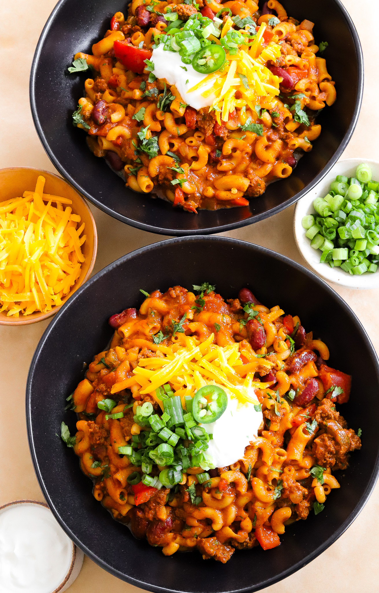

Main Course
CHILI MAC
PREP TIME: 10 MINUTES
COOK TIME: 35 MINUTES
TOTAL TIME: 45 MINUTES
YIELDS: 6 TO 7
This chili mac is like a warm hug in a bowl,
combining the bold flavors of chili with the
comforting heartiness of pasta! With a rich blend
of spices, hearty beef, and colorful veggies all
mingling together, each bite is a delicious explosion
of flavor. It’s the perfect dish to savor while curled
up on the couch—just don’t blame me if you find yourself
going back for seconds (or thirds)!
JUMP TO RECIPE
CHILI MACARONI
This chili mac is like a warm hug in a bowl,
combining the bold flavors of chili with the
comforting heartiness of pasta! With a rich blend
of spices, hearty beef, and colorful veggies all
mingling together, each bite is a delicious explosion
of flavor. It’s the perfect dish to savor while curled
up on the couch—just don’t blame me if you find yourself
going back for seconds (or thirds)!
PREP TIME: 10 MINUTES
COOK TIME: 35 MINUTES
TOTAL TIME: 45 MINUTES
YIELDS: 6 TO 7
PRINT RECIPE
PIN RECIPE
Ingredients
- 1 tablespoon olive oil
- 1 whole red bell pepper, diced
- 1 jalapeño, deseeded and diced
- 1/2 yellow onion, diced
- 1 1/2 tablespoon garlic, minced
- 1 pound 90/10 ground beef
- 2 1/2 tablespoons chili powder
- 2 teaspoons smoked paprika
- 2 teaspoons cumin
- 2 teaspoons coriander
- 1 1/2 teaspoon oregano
- 1 teaspoon salt, more or less to taste
- 1/2 teaspoon black pepper
- 1/2 teaspoon onion powder
- pinch of cayenne powder, to taste
- 3 cups beef broth, more as needed
- 2 tablespoons light brown sugar
- 15-ounce can fire-roasted diced tomatoes
- 15-ounce can tomato sauce
- 1/2 tablespoon Worcestershire sauce
- 15-ounce can kidney beans, rinsed and drained
- 12 ounces elbow pasta
- 1 to 2 tablespoons cilantro, finely chopped
- 1/2 cup cheddar cheese, shredded
- sour cream, optional topping
- chopped green onions, optional topping
INSTRUCTIONS
-
Heat Olive Oil: In a large pot, heat some olive
oil over medium heat.
-
Sauté Vegetables: Add diced red bell pepper, deseeded
and diced jalapeño, and diced yellow onion. Sauté
untilsoftened.
-
Add Garlic: Stir in minced garlic and cook for another
minute until fragrant.
-
Brown the Beef: Add lean ground beef to the pot.
Break it apart and cook until browned and no
longer pink.
-
Mix in Spices: Add chili powder, smoked paprika,
cumin, coriander, oregano, salt (adjust to taste),
black pepper, onion powder, and a pinch of cayenne
powder to taste. Stir and cook for 1 minute to bloom
the spices.
-
Add Liquids: Pour in beef broth, then add light brown
sugar, a can of fire-roasted diced tomatoes, a can of
tomato sauce, and Worcestershire sauce. Bring to a simmer.
-
Incorporate Beans and Pasta: Stir in rinsed and drained
kidney beans and uncooked elbow pasta.
-
Cook Pasta: Cover the pot and let it cook, stirring
occasionally, until the pasta is tender and has
absorbed most of the liquid.
-
Add Finishing Touches: Once the pasta is cooked,
stir in finely chopped cilantro and shredded cheddar
cheese until melted.
-
Serve: Top it off with a dollop of sour cream,
green onions, and a bit more cheddar cheese. Serve
immediately and enjoy your delicious chili mac!